Kullanım Kılavuzu
Sürüm 2.0 · Bilgisayar bilgisi gerektirmeyen, adım adım anlatım · Eylül 2026
Bu kılavuz DestekOfis'i ilk kez kullanacak biri için yazıldı. Teknik terim kullanmamaya çalıştık; kullandığımız birkaç kelimenin ne demek olduğu hemen aşağıda. Her bölümde önce ne işe yaradığını, sonra nasıl yapıldığını anlatıyoruz.
- DestekOfis nedir, nasıl çalışır?
- Bilmeniz gereken birkaç kelime
- Kurulum
- İlk giriş
- Lisans: deneme, lisans anahtarı, internetsiz kod
- Verinizi yükleme
- Günlük kullanım
- Yönetim: kullanıcılar ve yedekler
- Ekrandaki uyarılar ne demek?
- Sık sorulan sorular
1. DestekOfis nedir, nasıl çalışır?
DestekOfis, ofisinizdeki kayıtları (dosyalar, müşteriler, portföyler, hastalar, siparişler…) tek bir yerde toplayan bir programdır. Zaten Excel'de veya Google Sheets'te tuttuğunuz tabloyu yüklersiniz; program tabloyu okur, sütunlarınızı tanır ve ekranları ona göre kendisi hazırlar. Sonra ofisteki herkes aynı kayıtları görür, not ekler, tahsilat işler, görev verir.
- Kayıtlarınız ofisinizde kalır. Program bulutta değil, ofisteki bir bilgisayarda çalışır. Verileriniz başka bir yere gönderilmez; tablonuzun incelenmesi de sunucuda yapılır.
- Excel dosyanız bozulmaz. Program yüklediğiniz dosyayı değiştirmez; yaptığınız işlemler ayrıca saklanır.
- Kim ne yaptı, görünür. Her not, düzeltme ve tahsilat, yapan kişinin adı ve saatiyle kaydedilir.
2. Bilmeniz gereken birkaç kelime
| Kelime | Anlamı |
|---|---|
| Sunucu bilgisayar | Kayıtların saklandığı, ofiste hep açık duran bilgisayar. Programın "merkezi". Lisans bu bilgisayara bağlıdır. |
| Personel bilgisayarı | Çalışanların kullandığı diğer bilgisayarlar. Bunlar için ayrıca lisans gerekmez. |
| Yönetici | Programı kuran ve ayarlayan kişi (genelde ofis sahibi). Kullanıcı ekler, veri yükler, lisansı girer. |
| Deneme (demo) | Programı satın almadan önce ücretsiz kullanabildiğiniz süre (30 gün). |
| Lisans | Programı satın aldığınızı gösteren kullanım hakkı. Size lisans anahtarı olarak verilir: DO-XXXXX-XXXXX-XXXXX-XXXXX. |
| Salt okunur | "Sadece bakılabilir" demek. Kayıtları görür, arar, yazdırır ve yedeklersiniz; ama yeni bir şey ekleyemez, değiştiremezsiniz. |
| Kurulum kodu | Sunucu bilgisayarınızın kimlik numarası gibi bir kod. Lisans ekranında görünür; internetsiz lisans için bize iletilir. |
3. Kurulum
Tek bir kurulum dosyası var: DestekOfis-Kurulum-2.0.0.exe. Deneme ve lisanslı sürüm aynı dosyadır. Programın çalışması için başka hiçbir şey kurmanız gerekmez.
Sunucu bilgisayara
- Kurulum dosyasına çift tıklayın. Windows "Bu uygulamanın cihazınızda değişiklik yapmasına izin verilsin mi?" diye sorarsa Evet deyin.
Windows mavi bir "Windows kişisel bilgisayarınızı korudu" penceresi gösterirse Ek bilgi → Yine de çalıştır'a basın. Bu uyarı programın henüz dijital imzası olmadığı için çıkar. - Kurulum türü olarak Sunucu bilgisayar'ı seçin, İleri deyin.
- "Masaüstüne kısayol" ve "Ağ profilini Özel yap" kutuları işaretli kalsın. Kur'a basın.
- Son ekranda DestekOfis'i şimdi aç işaretliyken Son'a basın. Giriş ekranı açılır.
Personel bilgisayarlarına
- Aynı kurulum dosyasını çalıştırın. Program ağdaki sunucuyu kendisi bulur ve Personel bilgisayarı'nı seçili getirir.
- Kur ve Son. Masaüstündeki DestekOfis simgesine çift tıklamanız yeterli.
4. İlk giriş
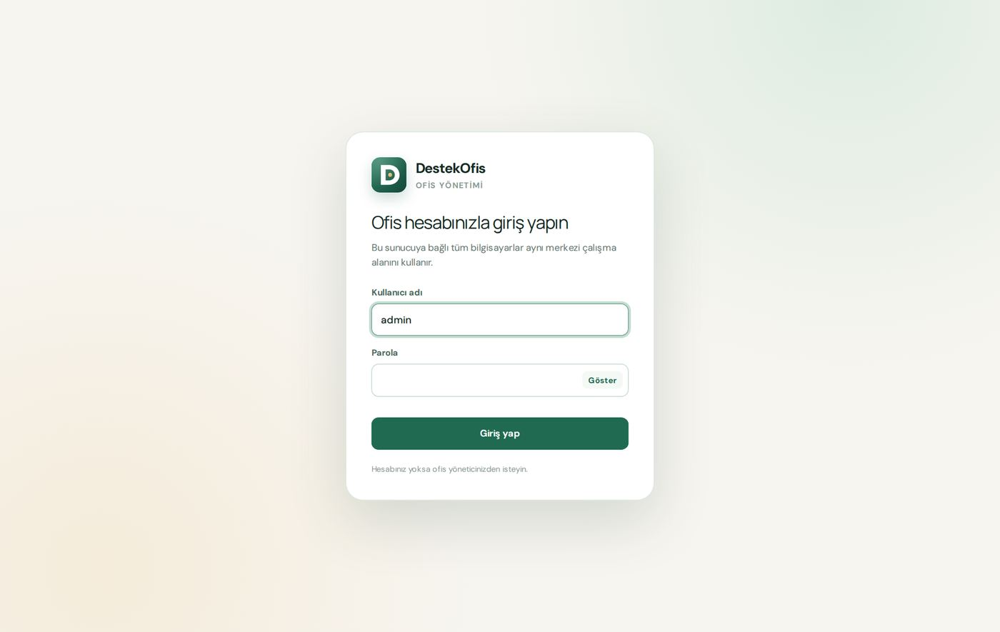
- İlk girişi sunucu bilgisayarın kendisinden yapın. Kullanıcı adı:
admin, parola:Ofis2026! - Program sizden yeni bir parola ister. En az 10 karakter, içinde harf ve rakam olsun. Bu parolayı bir yere not edin.
- Hepsi bu kadar: 30 günlük ücretsiz deneme kendiliğinden başlamıştır. Ekranın altında yeşil "Deneme sürümü · 30 gün kaldı" şeridi görünür. Hiçbir düğmeye basmanız gerekmez.
5. Lisans
Mantığı kısaca: Program kurulup ilk açıldığında 30 günlük ücretsiz deneme kendiliğinden başlar (sunucu bilgisayarın internete bağlı olması yeterli). Deneme süresince program eksiksiz çalışır. Denemenin 3. gününde program size firma bilgilerinizi sorar. Deneme bitince veya lisans süresi dolunca program durur ama hiçbir veri silinmez: lisansınız tanımlandığı an her şey kaldığı yerden devam eder.
Lisans ekranına nasıl ulaşılır?
Sol alttaki adınızın olduğu kartta Yönetim'e, açılan sayfada üstteki Lisans sekmesine tıklayın. Burada denemenin kaç gün kaldığını, lisans anahtarı kutusunu ve kurulum kodunu görürsünüz.
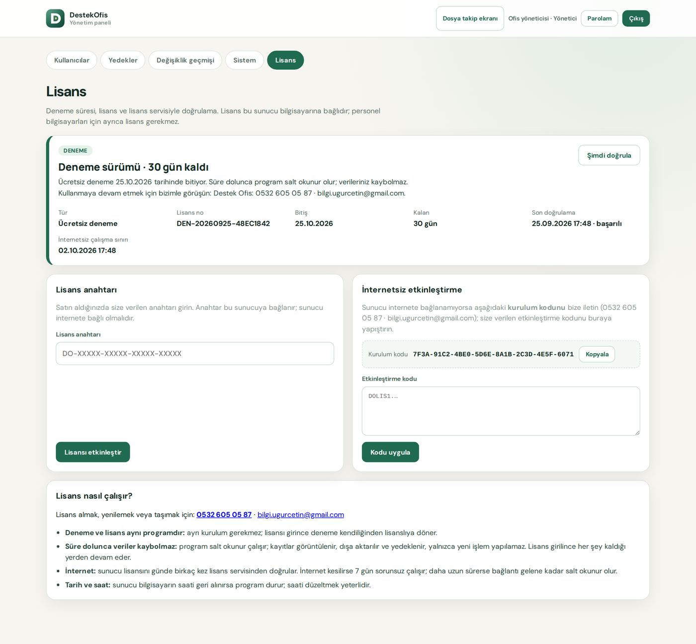
A) Ücretsiz deneme kendiliğinden başlar
- Programı kurup ilk kez açtığınızda deneme birkaç saniye içinde kendiliğinden başlar. Bunun için sunucu bilgisayarın internete bağlı olması yeterlidir.
- Kurulum sırasında internet yoksa ekranda "Ücretsiz deneme henüz başlamadı" yazar. İnterneti bağlayın: program birkaç dakikada bir yeniden dener ve deneme kendiliğinden başlar. Beklemek istemezseniz Yönetim → Lisans → Denemeyi şimdi başlat'a basın.
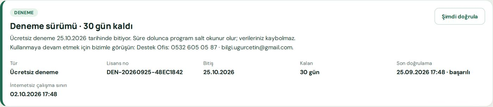
Denemenin 3. günü: firma bilgileriniz
Denemenin 3. gününde programı açtığınızda küçük bir pencere firma adınızı, yetkili kişiyi ve telefon ya da e-postanızı sorar. Bu bilgiler yalnızca deneme süresince size destek olabilmemiz ve süre bitmeden sizi bilgilendirebilmemiz içindir. Bilgileri gönder'e basarsanız bir daha sorulmaz; Daha sonra derseniz birkaç gün sonra yeniden sorar.
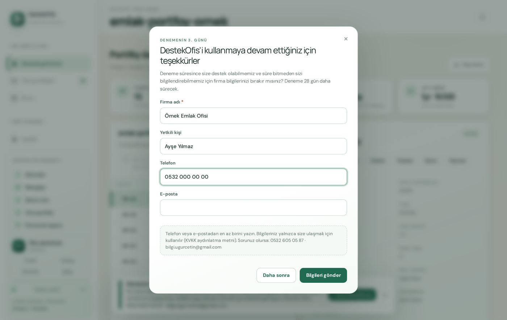
B) Lisans anahtarını girmek (satın aldıktan sonra)
- Size verilen anahtarı (
DO-ile başlar) Lisans anahtarı kutusuna yazın veya yapıştırın. Büyük/küçük harf ve tireler önemli değildir. - Lisansı etkinleştir'e basın. Kart "Lisanslı" olur ve ofisinizin adı görünür.
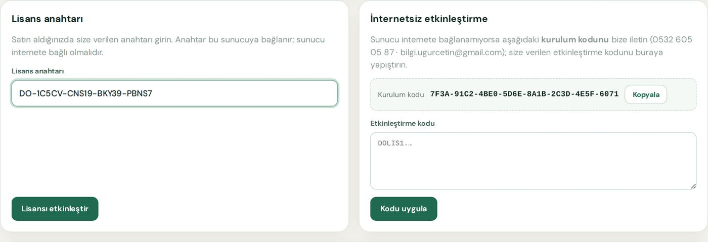
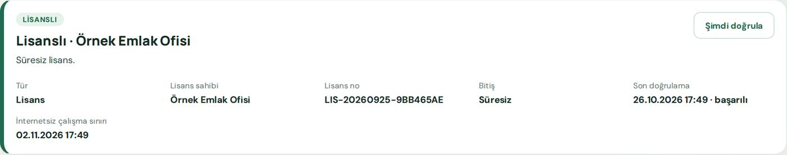
Bir lisans anahtarı tek sunucu bilgisayarda çalışır. Sunucu bilgisayarınızı değiştirirseniz bizi arayın (0532 605 05 87); lisansı yeni bilgisayara taşırız.
C) Sunucunun interneti yoksa: internetsiz etkinleştirme
- Lisans ekranındaki Kurulum kodu'nun yanındaki Kopyala'ya basın ve kodu bize (WhatsApp veya e-posta: bilgi.ugurcetin@gmail.com) gönderin.
- Size
DOLIS1.ile başlayan uzun bir etkinleştirme kodu göndeririz. - Bu kodu Etkinleştirme kodu kutusuna yapıştırıp Kodu uygula'ya basın.
Bu kod yalnızca kurulum kodunu gönderdiğiniz bilgisayarda çalışır; başka bilgisayara yapıştırılırsa "Bu kod başka bir bilgisayar için üretilmiş" uyarısı çıkar.
Deneme veya lisans süresi dolunca ne olur?
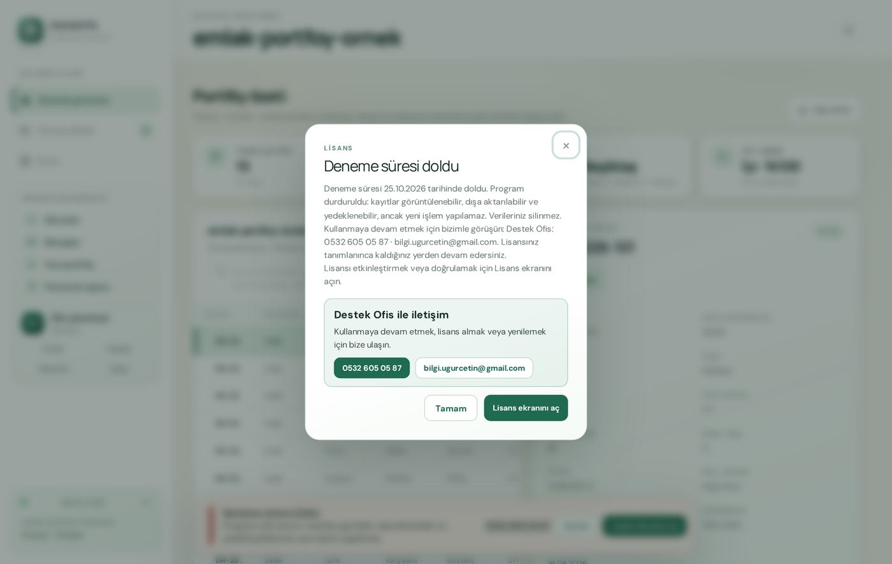
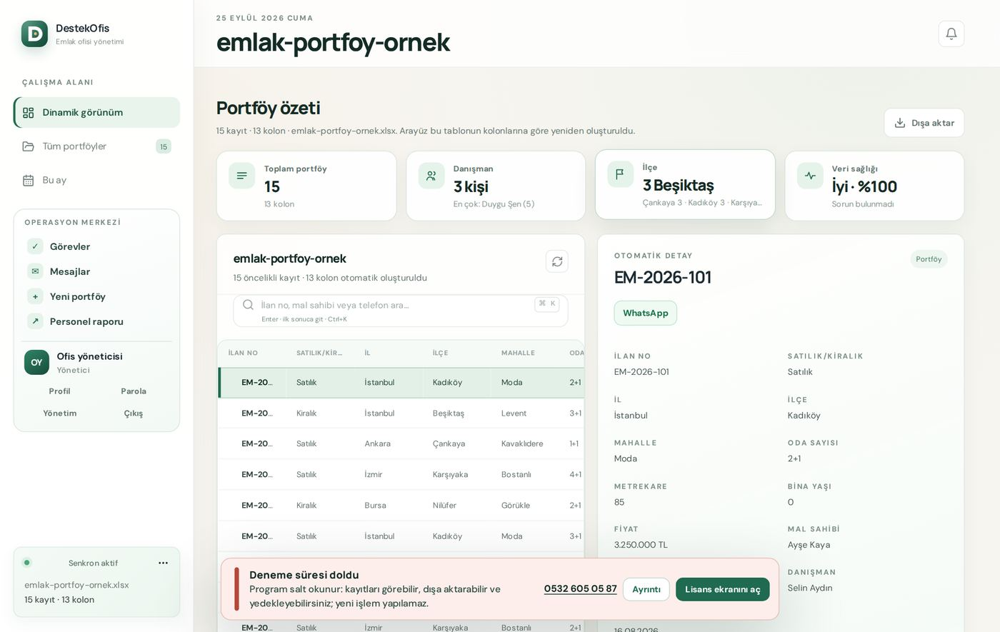
| Süre dolunca yapabildikleriniz | Yapamadıklarınız |
|---|---|
| ✓ Kayıtlara bakmak, aramak ✓ Dışa aktarmak (Excel'e almak) ✓ Yedek almak ve indirmek ✓ Kullanıcıları yönetmek ✓ Lisansı girmek | ✗ Yeni kayıt eklemek ✗ Kayıt düzeltmek veya silmek ✗ Not, telefon, tahsilat, görev, mesaj ✗ Yeni tablo yüklemek |
İnternet bağlantısı ve saat
- Sunucu, lisansını internetten günde birkaç kez kendiliğinden doğrular; sizin bir şey yapmanız gerekmez.
- İnternet kesilirse program 7 gün boyunca normal çalışır. Son 3 günde ekranda sarı uyarı çıkar. 7 günü geçerse, internet gelene kadar program durur. İnternet gelince Lisans ekranında Şimdi doğrula'ya basmanız yeterli.
- Sunucu bilgisayarın tarihi veya saati geri alınırsa program durur. Windows'ta tarihi düzeltin: Başlat → Ayarlar → Saat ve dil → Saati otomatik ayarla açık olsun.
- İnternetsiz koddan (C yolu) gelen lisanslar internet doğrulaması beklemez.
Ekranın altındaki lisans şeridi
| Şerit | Anlamı | Ne yapmalı? |
|---|---|---|
| Yeşil Deneme sürümü · X gün kaldı | Deneme devam ediyor. (Yalnızca yöneticiye görünür, × ile kapatılabilir.) | Bir şey gerekmez. |
| Sarı … gün kaldı / doğrulanamadı | Süre bitmek üzere veya internet birkaç gündür yok. | Lisans alın / interneti kontrol edin. |
| Kırmızı Süresi doldu / Engellendi / Doğrulanamadı / Saat | Program durdu (salt okunur). | Yönetici Lisans ekranını açar. |
Mevcut ofisler için: DestekOfis'i daha önce kullanan bir ofis 2.0'a güncellenince program 30 gün boyunca kesintisiz çalışır ("Lisans geçiş dönemi" yazar). Bu süre içinde lisansı girmeniz yeterli.
6. Verinizi yükleme
Deneme veya lisans etkinleşince ana ekranın ortasında "başlayalım" kartı görünür.
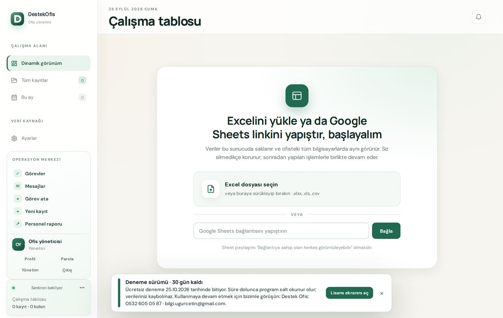
Program tablonuzu okur ve size ne bulduğunu gösterir: hangi sütunun telefon, tarih, tutar olduğunu, ofisinizin sektörünü tahmin eder. Önerisini siz onaylamadan hiçbir şey değişmez.
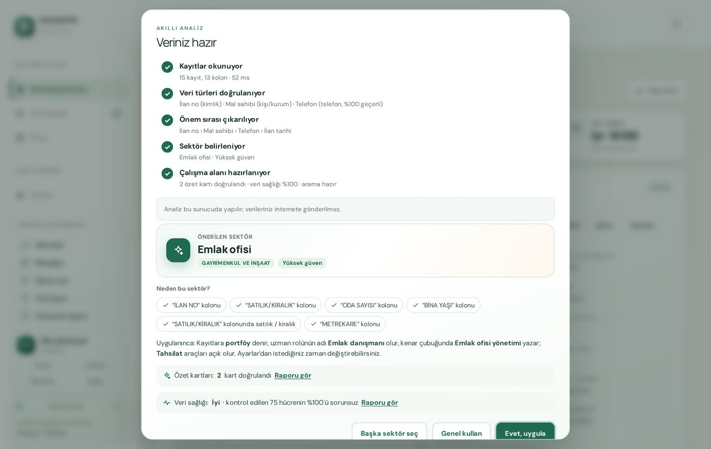
7. Günlük kullanım
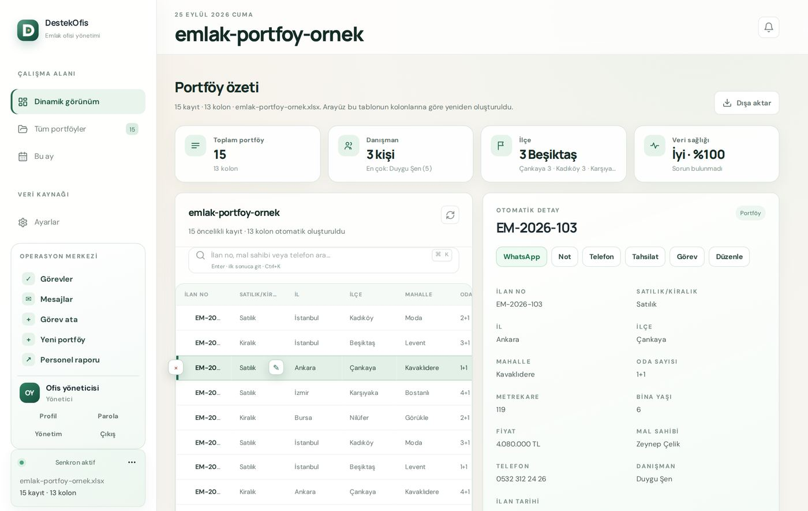
- Kayıt bulmak: Tablonun üstündeki arama kutusuna numara, isim veya telefon yazın. Birden çok sekme varsa her sekmede kaç sonuç olduğu yazar.
- Not eklemek: Kaydı seçin → Not → yazın → Notu kaydet. Not, adınız ve saatle kaydın geçmişine eklenir; herkes görür.
- Telefon, tahsilat, görev: Aynı yerden Telefon, Tahsilat, Görev düğmeleriyle.
- WhatsApp: WhatsApp düğmesi kayıttaki telefona mesaj penceresini açar.
- Bilgi düzeltmek: Tablodaki hücrenin üzerine gelince çıkan kalem (✎) simgesine basın.
- Sohbet: Sol menüdeki Mesajlar ile ofis içinde yazışabilirsiniz.
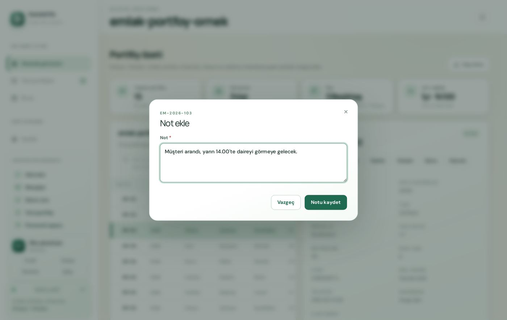
8. Yönetim: kullanıcılar ve yedekler
Yönetim sayfasına sol alttaki kartta Yönetim ile girilir. Bu sayfayı yalnızca yönetici görür.

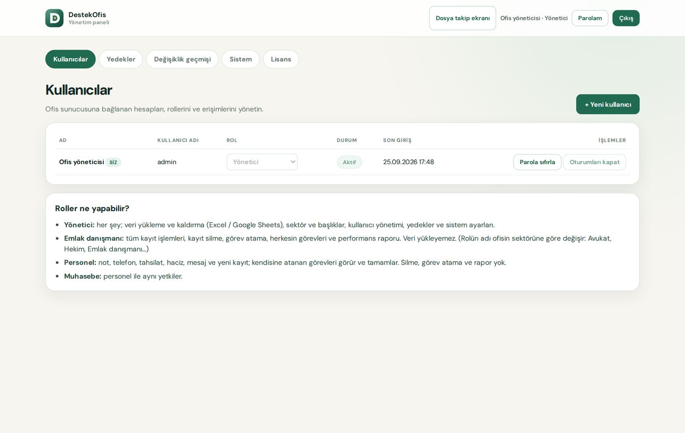
9. Ekrandaki uyarılar ne demek?
| Uyarı | Ne yapmalı? |
|---|---|
| Ücretsiz deneme henüz başlamadı | Sunucunun internetini kontrol edin; deneme bağlantı gelince kendiliğinden başlar. İsterseniz Yönetim → Lisans → Denemeyi şimdi başlat. |
| Deneme süresi doldu / Lisans süresi doldu | Bizi arayın: 0532 605 05 87. Lisansınızı tanımlarız; program kaldığı yerden devam eder. |
| Lisans doğrulanamadı | Sunucunun internetini kontrol edin, sonra Lisans → Şimdi doğrula. |
| Bilgisayar saati geri alınmış | Sunucunun tarih/saatini düzeltin (Saati otomatik ayarla). Saat daha önce yanlışlıkla ileri alınmışsa: internetli lisansta Lisans → Şimdi doğrula; internetsiz lisansta bizden yeni etkinleştirme kodu isteyin. |
| Lisans engellendi | Bizi arayın (0532 605 05 87). Sorun çözülünce Şimdi doğrula ile açılır. |
| Bu kod başka bir bilgisayar için üretilmiş | Bu bilgisayarın kurulum kodunu bize yeniden gönderin. |
| Bu işlem yapılamadı (salt okunur) | Program durmuş durumda; yukarıdaki lisans uyarılarından birine bakın. |
| "DestekOfis … sürümüne güncellendi" | Program kendini güncelledi. Yazdığınız notu kaydedip Yenile'ye basın. |
10. Sık sorulan sorular
Deneme bitince kayıtlarım silinir mi?
Hayır. Program yalnızca yeni işlem yapılmasını durdurur. Kayıtlarınızı görebilir, dışa aktarabilir ve yedekleyebilirsiniz.
Her bilgisayar için ayrı lisans mı alacağım?
Hayır. Lisans yalnızca sunucu bilgisayar içindir. Personel bilgisayarları ücretsiz bağlanır.
Programı silip yeniden kurarsam deneme yeniden başlar mı?
Hayır. Deneme her bilgisayara bir kez verilir.
İnternet kesilirse çalışamaz mıyız?
Çalışırsınız. Program 7 gün boyunca internet olmadan normal çalışır.
Sunucu bilgisayarımı değiştirmek istiyorum.
Yeni bilgisayara programı kurun, eski bilgisayardan aldığınız yedeği geri yükleyin ve bizden (0532 605 05 87) lisansı yeni bilgisayara taşımamızı isteyin (yeni bilgisayarın kurulum kodunu gönderin).
Lisansımı başkası kullanabilir mi?
Hayır. Lisans sunucu bilgisayarınızın kimliğine bağlıdır; başka bir bilgisayara kopyalanınca çalışmaz.
DestekOfis 2.0 · Kullanım Kılavuzu · Ekran görüntüleri örnek verilerle hazırlanmıştır.